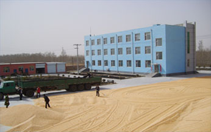

你当前位置：首页>海天动态
关于海天
吉林省海天农牧业有限公司，座落在长通公路105公里处，双 辽市境内。这里山青水秀、环境优美，物华天宝、人杰地灵，交通 便捷、四通八达。
公司成立于2004年，是双辽市政府重点招商引资企业。占地 面积24万平方米，建筑面积12万平方米，注册资金2700万元。是 集粮食收储、玉米食品加工与销售、饲料加工与销售、畜禽养殖 为一体的综合性农业产业化省级重点龙头企业。
公司成立于2004年，是双辽市政府重点招商引资企业。占地 面积24万平方米，建筑面积12万平方米，注册资金2700万元。是 集粮食收储、玉米食品加工与销售、饲料加工与销售、畜禽养殖 为一体的综合性农业产业化省级重点龙头企业。公司成立于2004年，是双辽市政府重点招商引资企业。占地 面积24万平方米，建筑面积12万平方米，注册资金2700万元。是 集粮食收储、玉米食品加工与销售、饲料加工与销售、畜禽养殖 为一体的综合性农业产业化省级重点龙头企业。公司成立于2004年，是双辽市政府重点招商引资企业。占地 面积24万平方米，建筑面积12万平方米，注册资金2700万元。是 集粮食收储、玉米食品加工与销售、饲料加工与销售、畜禽养殖 为一体的综合性农业产业化省级重点龙头企业。公司成立于2004年，是双辽市政府重点招商引资企业。占地 面积24万平方米，建筑面积12万平方米，注册资金2700万元。是 集粮食收储、玉米食品加工与销售、饲料加工与销售、畜禽养殖 为一体的综合性农业产业化省级重点龙头企业。
公司成立于2004年，是双辽市政府重点招商引资企业。占地 面积24万平方米，建筑面积12万平方米，注册资金2700万元。是 集粮食收储、玉米食品加工与销售、饲料加工与销售、畜禽养殖 为一体的综合性农业产业化省级重点龙头企业。公司成立于2004年，是双辽市政府重点招商引资企业。占地 面积24万平方米，建筑面积12万平方米，注册资金2700万元。是 集粮食收储、玉米食品加工与销售、饲料加工与销售、畜禽养殖 为一体的综合性农业产业化省级重点龙头企业。公司成立于2004年，是双辽市政府重点招商引资企业。占地 面积24万平方米，建筑面积12万平方米，注册资金2700万元。是 集粮食收储、玉米食品加工与销售、饲料加工与销售、畜禽养殖 为一体的综合性农业产业化省级重点龙头企业。公司成立于2004年，是双辽市政府重点招商引资企业。占地 面积24万平方米，建筑面积12万平方米，注册资金2700万元。是 集粮食收储、玉米食品加工与销售、饲料加工与销售、畜禽养殖 为一体的综合性农业产业化省级重点龙头企业。